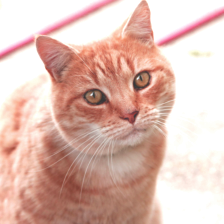

img = Image.open('images/cat.jpeg')
imgImage data augmentation
pytorch
data augmentation
This notebook will show the common methods used for preparing image data for vision models in PyTorch.
Load an original image
Convert the image to Tensor
toTensor = torchvision.transforms.ToTensor()
toTensor(img).shapetorch.Size([3, 1199, 1200])From above, we know that the image size is 1199 * 1200.
Resize the image to 224 by 224
resize = torchvision.transforms.Resize(224)
img_rs = resize(img)
img_rsFlip an image
Flip horizontally
flip = torchvision.transforms.RandomHorizontalFlip(p=1.0)
flip(img_rs)Flip vertically
flip = torchvision.transforms.RandomVerticalFlip(p=1.0)
flip(img_rs)Change brightness, contrast, saturation and hue of an image
colorjitter = torchvision.transforms.ColorJitter(brightness=0.5, contrast=0.5, saturation=0.5, hue=0.3)
colorjitter(img_rs)
Turn an image grayscale
grayscale = torchvision.transforms.Grayscale()
grayscale(img_rs)Crop an image
crop = torchvision.transforms.CenterCrop(128)
crop(img_rs)